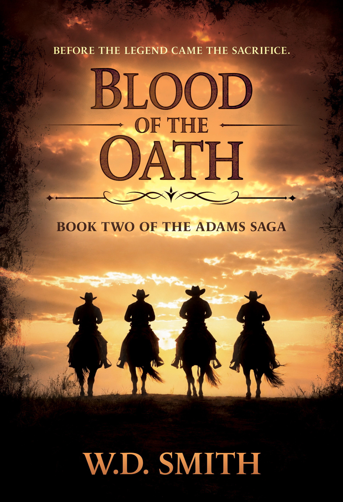

|

Blood of the Oath (Adams Ranch Saga 2)by W.D. Smith
When a Texas Ranger captain is murdered near the Rio Grande, Stephen “Tall” Adams rides south to investigate. Missing Rangers, disputed land claims, and powerful killers threaten an old friend's honor—and the ranch his family built through blood and sacrifice. Words from W.D. Smith When I finished Blood of the Comancheria, Tall Adams had earned the right to put the Ranger life behind him. He had a family, a ranch, and something worth staying home for—a life he never wanted to leave in the first place. But the Texas Tall knew was changing, and when word reaches him that his old friend and fellow Ranger Larry McNaully has been murdered, walking away simply isn't in his nature. That became the heart of Blood of the Oath for me. The “oath” in this story isn't just the one Tall once took as a Texas Ranger. It's the promises we make to family, to friends, and sometimes to ourselves. Tall returns to Ranger work because of his loyalty to McNaully—a friendship readers first saw take shape in Blood of the Comancheria. It's a relationship I'm enjoying exploring even further in a new series I'm currently writing, McNaully's Rangers, which follows Larry McNaully and his company of Rangers during the years between Blood of the Comancheria and Blood of the Oath. But Tall's decision to ride again also forces him to balance the man he once was against the husband, father, and rancher he has become. I also wanted Blood of the Oath to show a changing Texas. The Civil War has ended, but peace hasn't necessarily followed. The threats are changing, the frontier is changing, and the Adams family must change with it. At its heart, though, this is still a story about family, loyalty, and what a man is willing to risk when someone he loves—or something he believes in—is threatened. And as the Adams family moves forward, those choices will help shape not only the lives they've built, but the legacy they will leave behind. I hope readers enjoy riding with the Adams family again. —W.D. Smith
Get Your Copy →
|